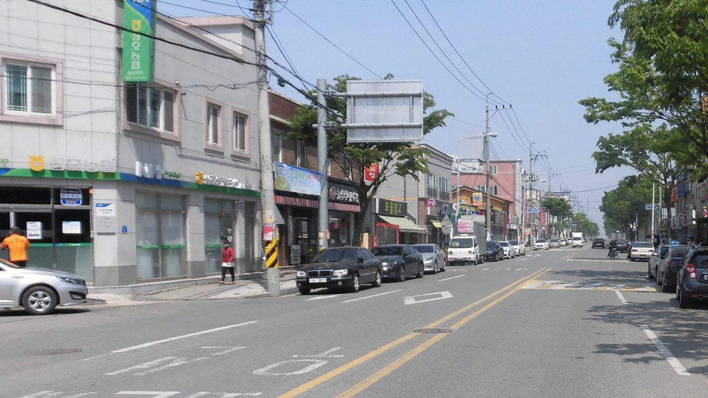

영암 2GW 집적화단지, 사업계획 자료 없이 동의서만 받아…기존 민간 임대계약 처리엔 "당장 답하기 어렵다"

23일 토지소유자 간담회 쟁점 정리, 예정지 땅 대부분 이미 민간업체와 개별 계약…영농형 아닌 일반 태양광으로 농지 일시사용 최대 23년, 빠르면 2029년 착공
전남 영암군이 삼호·미암 간척지에 추진하는 2GW 규모 재생에너지 집적화단지에서, 예정지 토지소유자들이 이미 민간 태양광업체와 맺어 둔 임대계약을 어떻게 처리할지가 쟁점으로 떠올랐다. 군은 지난 23일 삼호읍행정복지센터에서 연 토지소유자 간담회(군 집계 200여 명 참석)에서 사업계획을 화면으로만 보여 주고 '추진동의서'만 나눠 줬으며, 이 동의서는 군이 계획을 세우고 정부 지정을 준비하는 데 대한 동의일 뿐 토지 사용이나 임대차, 특정 사업자 선정에 대한 동의가 아니고 서면으로 바꾸거나 철회할 수 있다고 설명했다. 사업은 약 1,700만㎡에 예상 민간투자액 2조5,000억 원 규모로, 군이 계획을 세워 정부 지정을 받은 뒤 민간 사업시행자를 공개 모집하는 방식인데, 예정지 일대 토지소유자 대부분은 이미 여러 업체와 개별 계약을 마친 것으로 파악됐다. 군 에너지센터 정책팀장은 기존 업체가 시행자로 뽑히지 않으면 두 업체가 협의해 계약상 지위나 임차권을 넘기는 방법이 있다고 했지만, 협의가 깨지면 그 땅 주인은 사업에 참여하지 못하느냐는 질문에 강성관 영암군에너지센터장은 "그 질문은 당장 답하기 어렵다"고 했다. 군은 영농형이 아닌 일반 태양광으로 농지를 타용도 일시사용허가를 받아 쓰면 요건을 갖춘 간척지는 최대 23년까지 운영할 수 있고 빠르면 2029년 착공해 그때부터 계약한 땅에서는 농사를 지을 수 없다고 밝혔으나, 임차농 피해를 어떤 기준으로 지원할지는 이날 설명하지 않았다. 군은 11월 사업계획을 세워 올해 말에서 내년 초 사이 정부에 지정을 신청하고, 주민협동조합을 통한 발전사업 참여와 배당, 전 군민 에너지기본소득 같은 이익 공유 방안의 구체적인 방식과 재원은 사업계획과 시행자 선정 과정에서 정하겠다고 했다.
시민에너지 관점
2조5,000억 원이 들어가고 농지를 최대 23년 동안 발전소로 쓰는 사업에서 계획서보다 동의서가 먼저 주민 손에 쥐어진 것은 순서가 거꾸로다. 정부 지정 신청 일정이 빠듯해 자료를 먼저 다 내놓기 어렵다는 사정이 있겠지만, 철회할 수 있는 동의서라 해도 기존 계약이 어떻게 되는지 모르는 땅 주인은 무엇에 동의하는지 판단할 수 없고, 그 불안이 쌓이면 공공이 입지를 정해 이익을 나누겠다는 집적화단지의 취지마저 흔들린다. 땅을 먼저 묶어 둔 민간 계약이 그대로 넘어가면 주민협동조합이 지분을 가질 자리도 줄어드는 만큼, 주민 참여 몫은 시행자 공모 전에 정해 두어야 한다. 영암군은 11월 사업계획에 기존 계약 승계 원칙과 임차농 지원 기준, 주민 지분 몫을 담아 정부 지정 신청 전에 문서로 공개해야 한다.
출처: 영암열린신문 2026-10-30 선호성 원문 보기
霊岩の2GW集積化団地、事業計画の資料なしに同意書だけ配布…既存の民間賃貸契約の扱いは「今すぐには答えにくい」
23日の土地所有者懇談会の争点を整理、予定地の土地の大半は既に民間業者と個別契約…営農型ではない一般の太陽光で農地の一時使用は最長23年、早ければ2029年着工
全羅南道霊岩郡が三湖・美岩の干拓地で進める2GW規模の再生可能エネルギー集積化団地で、予定地の土地所有者が既に民間の太陽光業者と結んでいる賃貸契約をどう扱うかが争点に浮上した。郡は23日に三湖邑行政福祉センターで開いた土地所有者懇談会（郡の集計で200人余りが参加）で、事業計画を画面で示しただけで「推進同意書」のみを配り、この同意書は郡が計画を立てて政府指定を準備することへの同意にすぎず、土地の使用や賃貸借、特定事業者の選定への同意ではなく、書面で変更・撤回できると説明した。事業は約1,700万㎡、予想される民間投資額2兆5,000億ウォンの規模で、郡が計画を立てて政府の指定を受けた後に民間の事業施行者を公募する方式だが、予定地一帯の土地所有者の大半は既に複数の業者と個別契約を済ませたとみられている。郡エネルギーセンターの政策チーム長は、既存の業者が施行者に選ばれなければ両社が協議して契約上の地位や賃借権を移す方法があるとしたが、協議が決裂した場合その土地の所有者は事業に参加できないのかとの質問に、カン・ソングァン霊岩郡エネルギーセンター長は「その質問には今すぐには答えにくい」と述べた。郡は、営農型ではない一般の太陽光として農地の「他用途一時使用許可」を受ければ、要件を満たす干拓地では最長23年まで運営でき、早ければ2029年に着工し、その時点から契約した土地では農業を続けられないと明らかにしたが、小作農の被害をどのような基準で支援するかはこの日説明しなかった。郡は11月に事業計画をまとめ、今年末から来年初めにかけて政府に指定を申請し、住民協同組合を通じた発電事業への参加と配当、全郡民へのエネルギー基本所得といった利益共有策の具体的な方式と財源は、事業計画と施行者選定の過程で決めるとした。
市民エネルギーの視点
2兆5,000億ウォンが投じられ、農地を最長23年にわたり発電所として使う事業で、計画書より先に同意書が住民の手に渡ったのは順序が逆だ。政府指定の申請日程が厳しく資料を先にすべて出すのは難しいという事情はあろうが、撤回できる同意書であっても、既存の契約がどうなるか分からない土地所有者は何に同意するのか判断できず、その不安が積み重なれば、公共が立地を定めて利益を分かち合うという集積化団地の趣旨さえ揺らぐ。土地を先に押さえた民間契約がそのまま引き継がれれば、住民協同組合が持ち分を持つ余地も狭まるため、住民参加の取り分は施行者の公募前に決めておくべきだ。霊岩郡は11月の事業計画に、既存契約の承継原則、小作農支援の基準、住民の持ち分を盛り込み、政府指定の申請前に文書で公開すべきだ。
出典: 霊岩ヨルリン新聞 2026-10-30 ソン・ホソン 原文を読む
灵岩2GW集群园区只发同意书不给项目计划资料…既有民间租赁合同如何处理，当局称"现在难以回答"
梳理23日土地所有者座谈会争议：预定地大部分土地已与民间企业单独签约…采用非农光互补的普通太阳能，农地临时使用最长23年，最快2029年开工
全罗南道灵岩郡在三湖、美岩围垦地推进的2GW规模可再生能源集群园区，如何处理预定地土地所有者此前已与民间太阳能企业签订的租赁合同，成为争议焦点。郡政府23日在三湖邑行政福利中心召开土地所有者座谈会（据郡方统计约200人出席），只在屏幕上展示项目计划，发放的只有"推进同意书"；郡方解释说，这份同意书只是同意郡政府制定计划、准备申请政府指定，并非同意土地使用、租赁或选定特定企业，且可以书面变更或撤回。项目占地约1,700万平方米，预计民间投资2.5万亿韩元，方式是郡政府制定计划、获得政府指定后公开招募民间项目实施方；但据了解，预定地一带大部分土地所有者已与多家企业分别签订了合同。郡能源中心政策组长表示，如果原有企业未被选为实施方，可由双方协商转让合同地位或租赁权；但当被问到协商破裂时该土地所有者是否就无法参与项目，灵岩郡能源中心主任Kang Seong-gwan回答说："这个问题现在难以回答。"郡方表示，项目采用非农光互补的普通太阳能，以农地"他用途临时使用许可"方式推进，符合条件的围垦地最长可运营23年，最快2029年开工，届时已签约的土地将无法继续耕种；但对佃农损失将按什么标准给予支援，当天没有说明。郡方计划11月制定项目计划，于今年底至明年初向政府申请指定；至于通过居民合作社参与发电并分红、向全体郡民发放能源基本收入等利益共享方案，具体方式和资金来源将在制定项目计划和选定实施方的过程中确定。
市民能源视角
在一个投资2.5万亿韩元、将农地最长23年用作电站的项目中，同意书先于计划书交到居民手里，顺序是颠倒的。政府指定的申请日程紧张、难以先把资料全部拿出来，或许确有其事；但即便同意书可以撤回，不清楚原有合同将如何处理的土地所有者也无从判断自己在同意什么，这种不安一旦累积，就连"由公共部门选址并分享收益"这一集群园区的初衷也会动摇。如果先行锁定土地的民间合同被原样承接，居民合作社持股的空间也会缩小，因此居民参与的份额应在公开招募实施方之前定下来。灵岩郡应在11月的项目计划中写明原有合同的承接原则、佃农支援标准和居民持股份额，并在申请政府指定之前以书面形式公开。
来源: 灵岩开放新闻 2026-10-30 Seon Ho-seong 查看原文
Yeongam's 2GW solar cluster hands out consent forms without a project plan; on existing private leases, officials say "hard to answer right now"
Issues from the Oct. 23 landowners' meeting: most land in the planned area is already leased to private developers; conventional solar rather than agrivoltaics, with farmland used for up to 23 years under a temporary-use permit and construction from 2029 at the earliest
How to deal with leases that landowners have already signed with private solar developers has become a central issue for the 2GW renewable energy cluster that Yeongam County in South Jeolla Province is pursuing on the Samho-Miam reclaimed land. At a landowners' meeting on Oct. 23 at the Samho-eup administrative welfare center, attended by some 200 people by the county's count, officials showed the project plan only on a screen and handed out nothing but a "consent to proceed" form, explaining that it signals agreement only to the county drawing up a plan and preparing to apply for government designation, not to land use, leasing or the choice of any particular developer, and that it can be changed or withdrawn in writing. The project covers about 17 million square meters with expected private investment of 2.5 trillion won, and the county plans to draw up the plan, obtain government designation and then publicly recruit a private developer, but most landowners in the area are understood to have already signed individual contracts with various companies. A policy team leader at the county's energy center said that if an existing developer is not chosen, the two companies could negotiate to transfer contractual status or leasehold rights, but when a resident asked whether a landowner would be shut out of the project if those talks fail, Kang Seong-gwan, head of the Yeongam County Energy Center, said "that question is hard to answer right now." The county said the project would use conventional solar rather than agrivoltaics, with farmland held under a temporary permit for other uses that allows qualifying reclaimed land to host solar for up to 23 years, and that construction could begin in 2029 at the earliest, after which leased land could no longer be farmed, but it did not explain on what basis tenant farmers would be compensated for their losses. The county plans to finalize the project plan in November and apply for designation between the end of this year and early next year, and said the specific methods and funding for benefit-sharing options, such as participation and dividends through resident cooperatives and an energy basic income for all county residents, will be decided during planning and developer selection.
Citizen Energy View
In a project worth 2.5 trillion won that would turn farmland into a power plant for up to 23 years, putting consent forms in residents' hands before a plan is the wrong way round. The tight timetable for the designation application may make it hard to release everything first, but even a withdrawable consent leaves landowners unable to judge what they are agreeing to if they do not know what will happen to their existing contracts, and as that unease builds it undermines the very idea of a cluster in which the public sector chooses the site and shares the benefits. If leases signed early by private developers simply carry over, there will be less room for resident cooperatives to hold equity, so the residents' share should be fixed before developers are invited to bid. Yeongam County should put rules for transferring existing contracts, compensation standards for tenant farmers and the residents' equity share into its November plan, and publish them in writing before applying for designation.
Source: Yeongam Yeollin Sinmun 2026-10-30 Seon Ho-seong Read the original